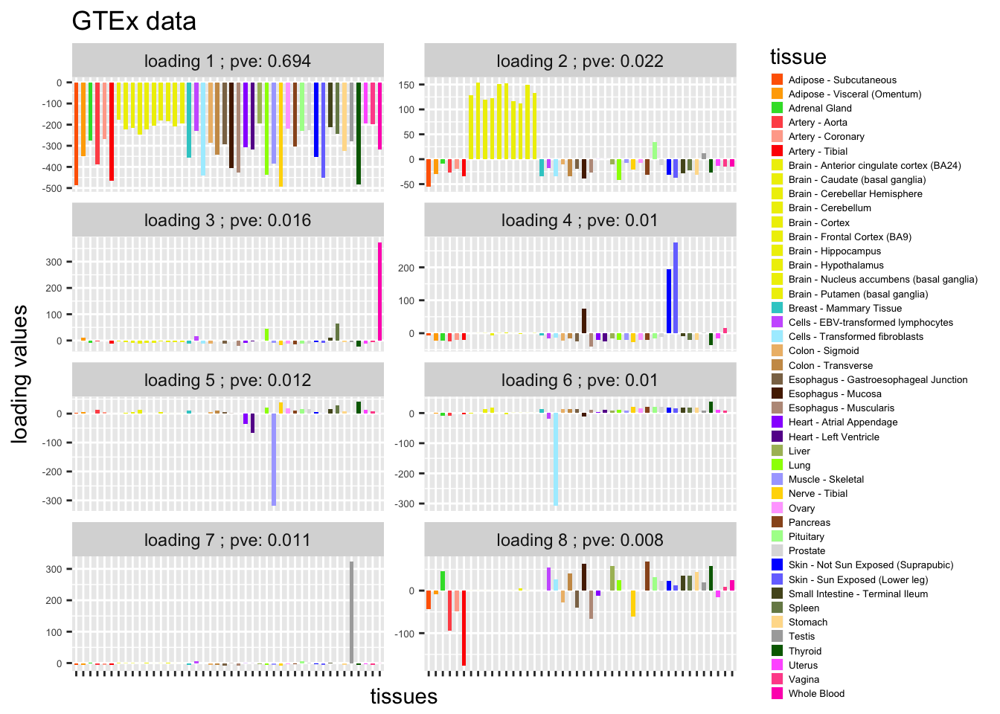
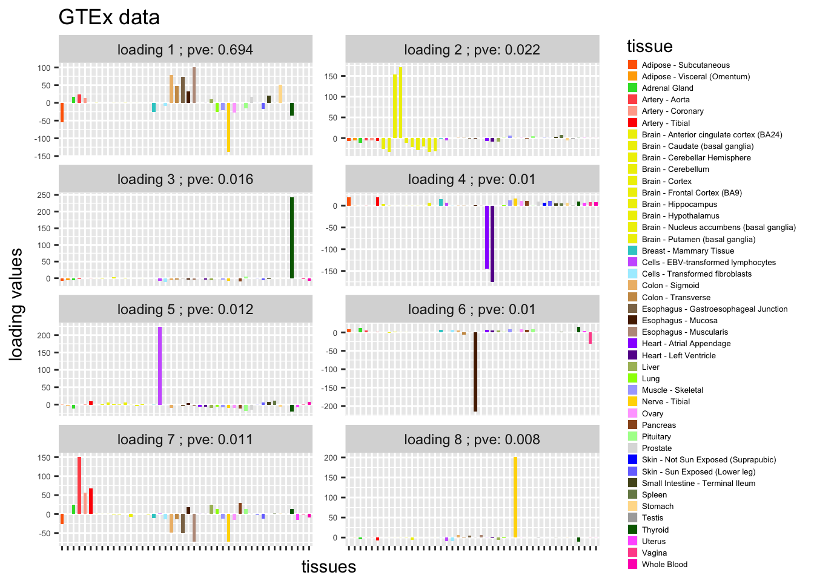
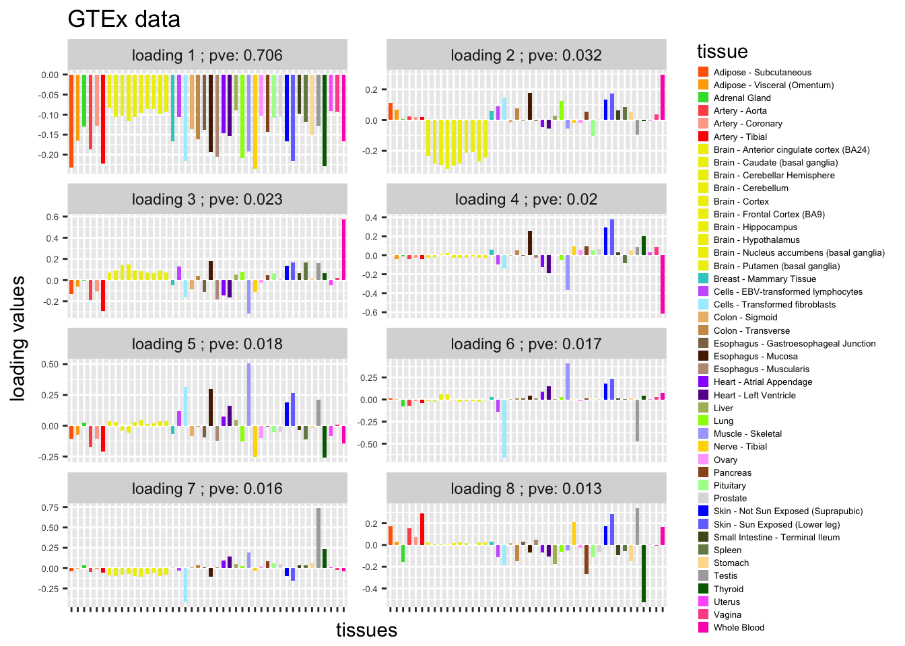
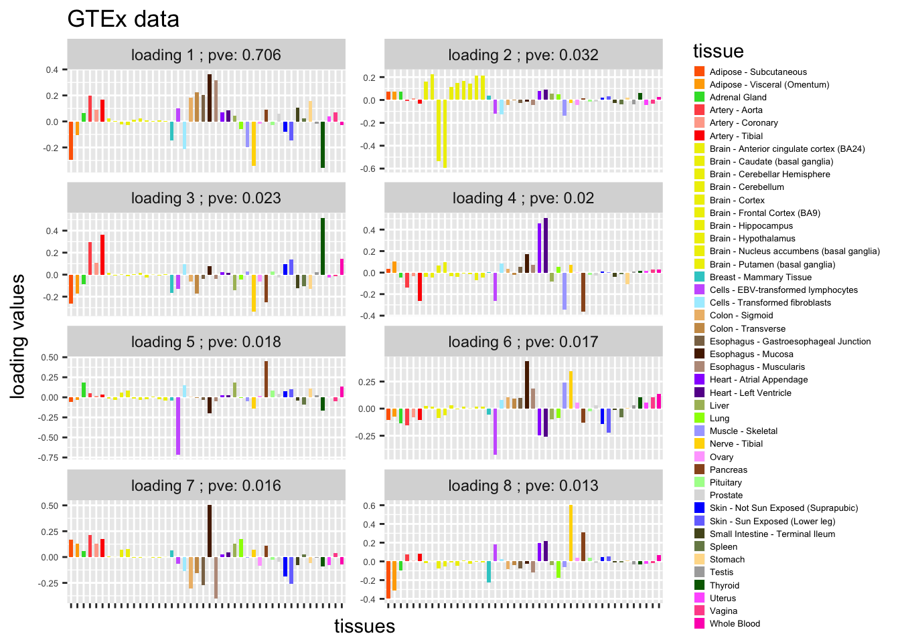

Last updated: 2018-01-10
Code version: 739016a
plot_GTEXres = function(L,pve){
library(reshape2)
data_L = melt(L)
colnames(data_L) = c("tissue","loading","value")
library(ggplot2)
tissue_color = as.character(colordata[,2])
data_L$tissue = factor(data_L$tissue,levels = 1:44 ,labels = as.character(colordata[,1]) )
data_L$loading = factor(data_L$loading,levels = 1:14 ,labels = paste("loading",1:14,"; pve:", pve[1:14]))
ggplot(data_L,aes(x = tissue,y = value,fill = factor(tissue) )) +
geom_bar(stat = "identity",width = 0.6) +
scale_fill_manual(values=tissue_color) +
scale_x_discrete(labels = NULL) +
theme_grey()+
theme(legend.position="right", legend.text=element_text(size=5), axis.text.y = element_text(size = 5)) +
labs(title = "GTEx data", y = "loading values" ,x = "tissues", fill="tissue") +
facet_wrap(~loading, ncol = 2, scales = "free_y") +
guides(fill = guide_legend(ncol = 1, keyheight = 0.5, keywidth = 0.5))
}
b_flash = readRDS("../data/GTExdata/res_flashr2/bflashvarcol.rds")
load("../data/GTExdata/gtexEQTL_zscore.rds")
ssY = sum(zscore^2)
K = dim(b_flash$EL)[2] -1
pve = (sapply(seq(1,K),function(x){ sum(b_flash$EL[,x]^2 %*% t(b_flash$EF[,x]^2)) }))/ssY
pve = pmax(round(pve,3),0.001)
dat = read.table('../data/GTExColors.txt', sep = '\t', comment.char = '')
colordata = dat[c(1:6,9:18,21:23,26:30,32,33,35,36,38:53),1:2]L = b_flash$EL[,1:8]
plot_GTEXres(L,pve)
L = b_flash$EL[,9:16]
plot_GTEXres(L,pve)
gsvd = svd(zscore)
pve = (sapply(seq(1,K),function(x){ sum((gsvd$d[x] * gsvd$u[,x] %*% t(gsvd$v[,x]))^2) }))/ssY
pve = pmax(round(pve,3),0.001)
L = gsvd$v[,1:8]
plot_GTEXres(L,pve)
L = gsvd$v[,9:16]
plot_GTEXres(L,pve)
sessionInfo()R version 3.3.0 (2016-05-03)
Platform: x86_64-apple-darwin13.4.0 (64-bit)
Running under: OS X 10.13.2 (unknown)
locale:
[1] en_US.UTF-8/en_US.UTF-8/en_US.UTF-8/C/en_US.UTF-8/en_US.UTF-8
attached base packages:
[1] stats graphics grDevices utils datasets methods base
other attached packages:
[1] reshape2_1.4.2 flashr2_0.4-0 softImpute_1.4 PMA_1.0.9
[5] impute_1.48.0 plyr_1.8.4 denoiseR_1.0 Matrix_1.2-11
[9] R.matlab_3.6.1 cowplot_0.8.0 ggplot2_2.2.1 ashr_2.2-3
[13] ebnm_0.1-7 MASS_7.3-47 workflowr_0.4.0 rmarkdown_1.6
loaded via a namespace (and not attached):
[1] lattice_0.20-35 Rmosek_7.1.2 colorspace_1.3-2
[4] htmltools_0.3.6 yaml_2.1.14 rlang_0.1.2
[7] R.oo_1.21.0 withr_2.0.0 R.utils_2.5.0
[10] REBayes_0.85 foreach_1.4.4 stringr_1.2.0
[13] munsell_0.4.3 gtable_0.2.0 R.methodsS3_1.7.1
[16] devtools_1.13.3 codetools_0.2-15 leaps_3.0
[19] memoise_1.1.0 evaluate_0.10.1 labeling_0.3
[22] knitr_1.17 pscl_1.5.2 doParallel_1.0.11
[25] irlba_2.2.1 parallel_3.3.0 curl_2.8.1
[28] Rcpp_0.12.14 flashClust_1.01-2 scales_0.4.1
[31] backports_1.1.0 scatterplot3d_0.3-40 truncnorm_1.0-7
[34] gridExtra_2.3 digest_0.6.12 stringi_1.1.5
[37] grid_3.3.0 rprojroot_1.2 tools_3.3.0
[40] magrittr_1.5 lazyeval_0.2.0 tibble_1.3.3
[43] cluster_2.0.6 FactoMineR_1.36 SQUAREM_2017.10-1
[46] assertthat_0.2.0 httr_1.3.0 rstudioapi_0.6
[49] iterators_1.0.9 R6_2.2.2 git2r_0.19.0 This R Markdown site was created with workflowr